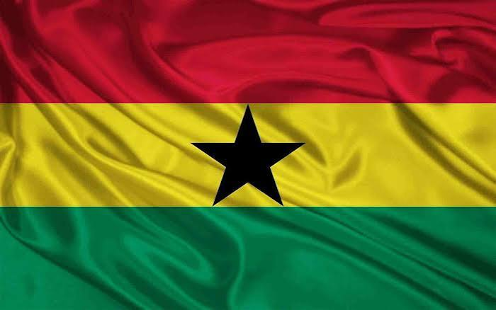

Macdonald Prince Yingura
About Me

Hello! My name is Macdonald Prince Yingura from Ghana. I am popularly known as Mr.Mackie I am studying Web Development through BYU Pathway Worldwide. I enjoy programming, web design, and learning new technologies. My goal is to become a professional software developer while building useful applications for businesses and individuals.
Ghana

Ghana is located in West Africa and is well known for its rich culture, friendly people, beautiful beaches, and historical landmarks. It is one of Africa's most peaceful nations and has a growing technology industry.